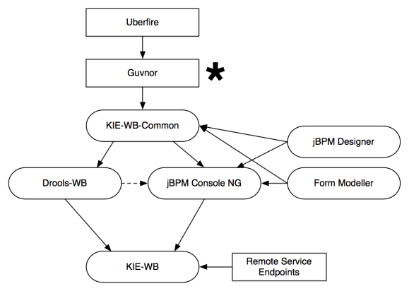
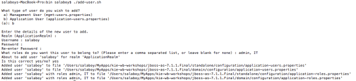
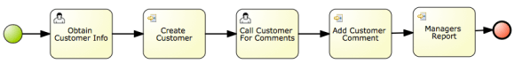
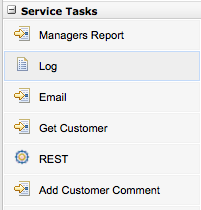

KIE-WB / JBPM CONSOLE NG – CONFIGURATIONS
Hi all, this is a follow up post from my previous entry about how to use the jBPM Console. The main idea of this post is to describe some of the most common configurations that you will required to do to the jBPM Console NG in order to use it in your own company. But before going into technical details we will be covering the differences between the KIE Workbench (KIE-WB) and the jBPM Console NG itself. Both applications require similar configurations and its good to understand when to pick one or the other. We will be covering these topics in the free workshops in London.
Introduction
If you look at the project source code and documentation, you will notice that there are several projects that are being created to provide a complete set of tools for Drools and jBPM. Because of the modular approach that we have adopted for building the tools, you can basically choose between different distributions depending on your needs. The jBPM Console NG can be considered as a distribution of a set of packaged related with BPM only. The KIE Workbench (KIE-WB) is the full distribution, that contains all the components that we are creating, so inside it you will find all the BPM and Rules modules. If more modules are added to the platform, the KIE-WB will contain them.
Sometime ago Michael Anstis posted an article in blog.athico.com to explain this transition: http://blog.athico.com/2013/06/goodbye-guvnor-hello-drools-workbench.html This blog post was targeted to Guvnor users, so they can understand the transition between Drools 5.5 and Drools 6. So the intention behind the following section is to explain the same but for jBPM users, trying to unify all the concepts together.
Projects Distributions
The previous mentioned blog explains most of the components that we are creating now, but the following image add some details on the BPM side:

- Project Distributions
Some quick notes about this image:
- Uberfire and Guvnor are both frameworks, not distributions.
- We are keeping the name Guvnor for what it was originally intended. Guvnor is a framework to define all the internal project automation and organization. Guvnor is the internal framework that we will use to provide a smart layer to define how projects and all the knowledge assets will be managed and maintained.
- KIE-WB-Common is not a distribution by itself but it could, because it contains all the shared bits between all the distributions.
- Drools Workbench only contains authoring tools related with Rules, notice that in the same way as Guvnor it doesn’t provide a runtime for your rules. This could be added in the future but in 6.0 is not.
- The jBPM Console NG replaced the old jBPM GWT console
- The difference between names (Drools Workbench and jBPM Console NG) is due the fact that the jBPM Console NG does provide all the runtime mechanisms to actually run your Business Processes and all the assets associated with them.
- Notice that the jBPM Console NG uses some of the Drools-WB modules and also integrates with the jBPM Designer and the Form Modeller.
- KIE Workbench contains all the components inside the platform and also add the Remote Services to interact with processes.
- Notice that the Remote Service in 6.x are only for the BPM side, that means that we can also provide the jBPM Console NG distribution with those services, it is not a priority right now but it can be done if someone thinks that it’s a good idea.
- You can find all these projects under the droolsjbpm organization in github: http://github.com/droolsjbpm
- All the configurations and blogs related to the jBPM Console NG also applies for the KIE Workbench
- The jBPM 6.0 installer will come with KIE Workbench bundled and because of this most of my posts will be showing screenshots of KIE-WB instead of the jBPM Console NG.
Configurations & Deployment
If you take a look at the source code repositories in Github, you will find that the jBPM Console NG, Drools Workbench and Kie Workbench contains a project called *-distribution-wars. These projects are in charge of generating the applications to be distributed for different Servlet Containers and Application Servers. For now we are providing bundles for Tomcat 7, JBoss AS 7, and JBoss EAP 6.1. (If you are a developer, you can also run these applications using the GWT Hosted Mode, which starts up a Jetty server and automatically deploys the application so it can be easily debugged.)
Here we will see how to deploy and configure the application to work in JBoss AS 7. Obviously you don’t need to do so if the jBPM Installer does that for you. But is always good to know what is going on under the hood, just in case that you prefer to manually install the applications.
There are three points to consider when we configure the application for deployment:
- Users/Roles/Groups
- Domain Specific (Custom) Connectors
- JBoss AS 7 Profile
For the sake of simplicity, I’ve borrowed a JBoss AS 7 configured by Maciej and deployed the KIE Workbench latest snapshot, so you can download it and we can review it’s configurations from there. You can download it from here:
Users/Roles/Groups
By default the KIE-Workbench uses the JBoss AS configured users to work. In order to create a new user we need to use the ./add-user.sh script located inside the /bin/ directory. Using this script we will be creating all the users required by our business processes, and for that reason we will be also assigning them groups and roles.

- Adding a New User
As you can see in the previous image, using the ./add-user.sh script you can create a new user for the application (first two options: option B, and empty realm). Note that you need to use different strings for the user name and for the password. For now you can create users with role admin, so it will have access to all the screens of the tool and then you can write the groups where the user belongs. In this case the user salaboy has Role: admin and he belongs to the IT group. There are some restricted words that cannot be used as group names. For now avoid using “analyst”, “admin”, “developer” for group names.
Domain Specific (Custom) Tasks / Connectors
Domain Specific Connectors are the way to integrate your business processes with external services that can be inside or outside your company. These connectors are considered technical assets and because of that needs to be handled by technical users. Most of the time it is recommended to not change/modify the connectors when the application is running, and for that reason these connectors needs to be provided for the application to use in runtime.
Three things are required to use a Custom Connector:
- Provide an implementation of the WorkItemHandler interface, which is the one that will be executed in runtime.
- Bind the implementation to a Service Task name
- Create the WorkItem Descriptor inside the tool
In order to provide these three configuration points you can take a look at the Customer Relationship example in the jbpm-playground repository.

- Customer Relationships Example
The main idea here is to have a separate project that contains the workItems implementations, for example: CreateCustomerWorkItemHandler , you will need to compile this project with maven and install the produced jar file inside the KIE-WB application. In order to do that you just copy the customer-services-workitems-1.0-SNAPSHOT.jar into the WEB-INF/lib directory of the kie-wb.war app. On this example the workItemHandler implementations interacts with a public web service that you can check here , so you will require internet connection in order to try this example.
Notice also that inside the customer-relationship project there are some high level mappings of the Domain Specific Tasks that can be used inside our Customer Relationship Project -> WorkItemDefinitions.wid. This configuration will basically add you Service Tasks inside the Process Designer Palette:

- Domain Specific Service Tasks
The last step is to bind the High Level mapping to their implementation for this environment. You can do that by adding new entries into the WEB-INF/classes/META-INF/CustomWorkItemHandlers.conf file, for this example we just need to add the following entries:
…
“CreateCustomer”: new org.jbpm.customer.services.CreateCustomerWorkItemHandler(),
“AddCustomerComment”: new org.jbpm.customer.services.AddCustomerCommentsWorkItemHandler(),
“ManagersReport”: new org.jbpm.customer.services.ManagersReportWorkItemHandler(),
…
Note about the JBoss AS 7 Profile
In order to run the KIE Workbench you need to run it with full JBoss AS7 profile, so if you are installing it using a fresh JBoss AS7 please don’t forget to point to the full project when you use the ./standalone.sh script:
./standalone.sh –server-config=standalone-full.xml
Download
You can download a pre installed version of KIE-WB where you can clone the jbpm-playground repository which contains the example (Authoring -> Administration and then Clone a Repository using the jbpm-playground url: https://github.com/droolsjbpm/jbpm-playground).
This pre installed version contains the workItemHandlers already installed and configured for the Customer Relationship example, but you can obviously make some changes and upgrade them if it’s needed.
It also has two users created:
User/Password: jbpm/jbpm6 (Groups: IT, HR, Accounting, etc)
User/Password: salaboy/salaboy123 (Groups: IT)
Please feel to try it out and let me know if it works for you.
There are some few seats available for the Drools & jBPM Free Workshop Tomorrow and on Thursday. If you are planning to assist please write me an email to salaboy (at) redhat (dot) com. For more details about it look here.

{kind=link}
{kind=link}
{kind=link}
{kind=link}